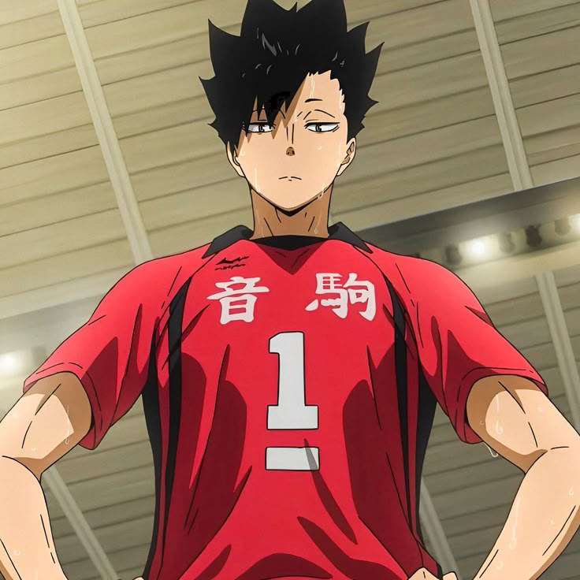
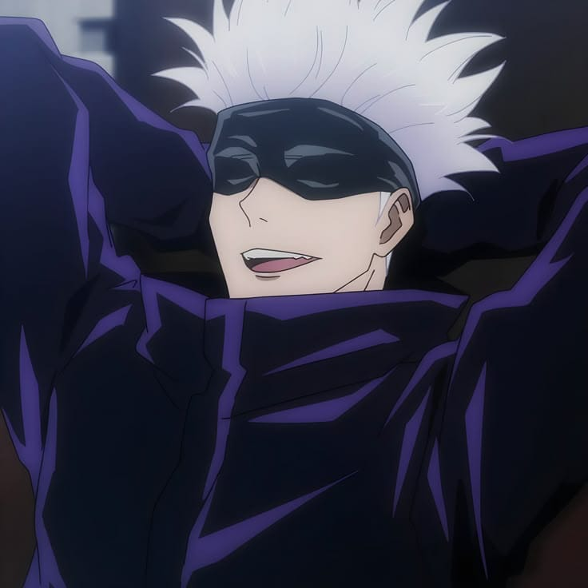
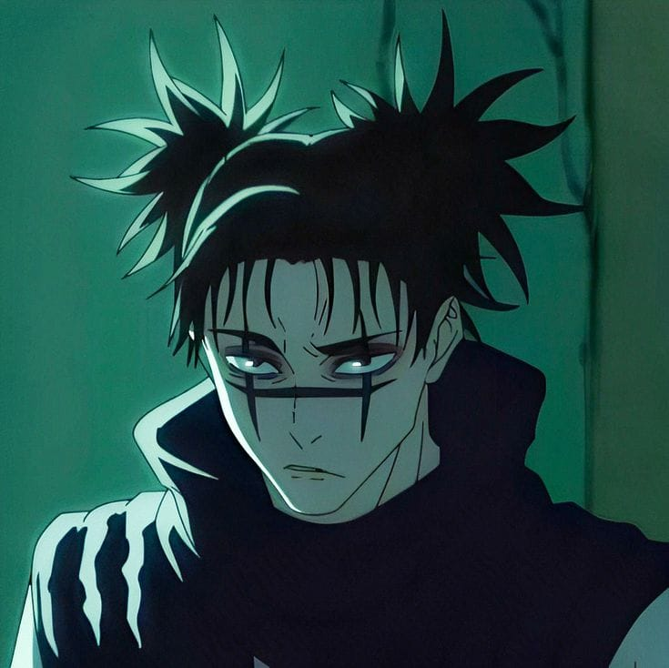
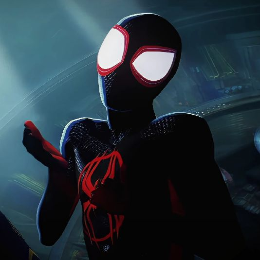

Sobre mim
Oi! meu nome é julia vitoria
Tenho 16 anos
Nasci 27/12/2008 na cidade de passos MG.
Estudo na Escola estadual são jose e faço curso de informatica
ja no segundo ano do ensino medio
Quero muito dar o meu máximo nesse e no meu próximo ano, melhorar alguns aspectos em relação ao estudo em geral e também pessoais, continuar dando muito orgulho aos meus pais, ser uma boa filha pra eles também e quem sabe um dia, proporcionar a eles algo bem maior. Tento ser uma boa amiga sempre, dizem que do grupinho sou a mais sincera, eu concordo muito com isso e também gosto desse meu jeito tão genuíno e verdadeiro com tudo . Gosto muito de animes / mangás, mas meus favoritos são haikyuu e jujutsu kaisen, foram os primeiros que assisti.
Meus hobbies
- jogar volei
- dormir
- sair com minha mãe
- sair com minhas amigas
- escutar musica
- assistir anime
- sou professor da salinha na igreja
Foto dos meus personagens favoritos
Kuroo
Gojo
Choso
Miles Murilo
